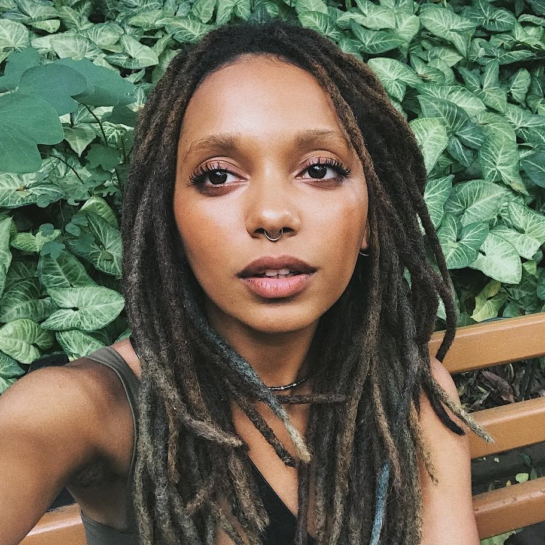

Mulher que inspira pela consistência e personalidade!

Nátaly Neri é graduanda em Ciências Sociais pela Universidade Federal de São Paulo - EFLCH, onde se dedica ao estudo da educação crítica com recorte étnico - racial, atuando também em um programa de pesquisa sobre docência e formação de professores (PIBID), que a coloca diretamente em contato com a educação pública no Brasil. Além disso, participa de coletivos feministas e ligados diretamente aos Movimentos Negros dentro do espaço acadêmico. (Fonte: GNT)